Design

Her skal der komme relevant tekst og billeder med underoverskrifter
Farver
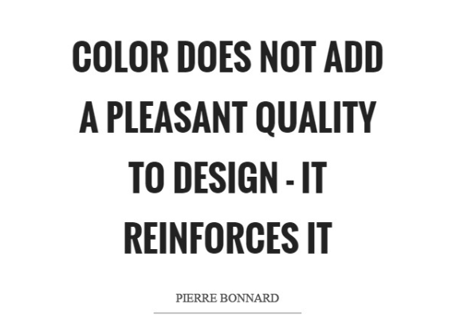Farver påvirker os mennesker, uanset om det er varme farver, eller kolde farver. De kan være med til at påvirke vores humør, eller de følelser vi nu får, når vi ser bestemte farver, f.eks. forbinder vi farven rød med kærlighed. Der er nogle forskellige kategorier indenfor farver, der er primær farver, gul, blå og rød, de er grundfarverne. Sekundærfarverne, grøn, orange og lilla. Og tertiære farver, det er når man blander primære og sekundær farver.
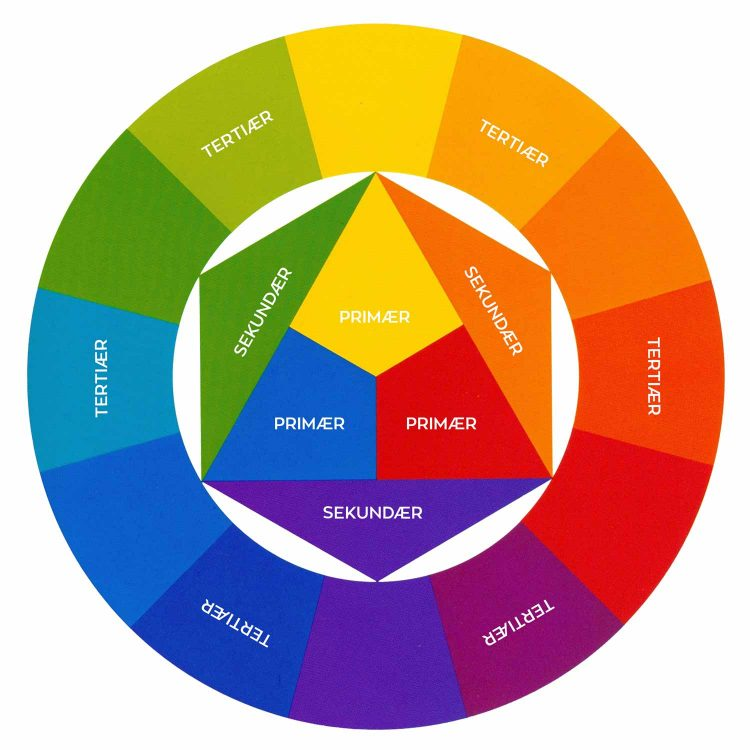De primære farver kaldes også RGB-farver, dette er et additivt farvesystem, da farverne bliver dannet ved hjælp af forskellige lysbølger, som lægges sammen. Der er også CMYK (Cyan Magenta Yellow Key(Black))
Typografi

Typografi er den måde en designer danner et helhedsbillede af sin side. Det er med til at give et behageligt billede af ens side hvis man bruger det rigtigt. Når man bruger typografi er det vigtigt at man ikke bruger for mange forskellige typer men holder sig til et eller to forskellige, så ens side ikke bliver forvirrende at kigge på.
Der er nogle typografiske begreber som f.eks. X-height. Dette er højden på minuskel x, det bliver målt fra bundlinjen og så til toppen af bogstavet, dette kan bruges til at parre typefaces.
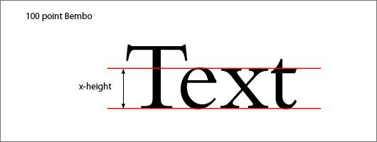Leading, er også bedre kendt som linjeafstand, det bliver målt ved at man tager mål fra bundlinjen til bundlinje, og man regner typisk med 120-130% af skriftstørrelsen.
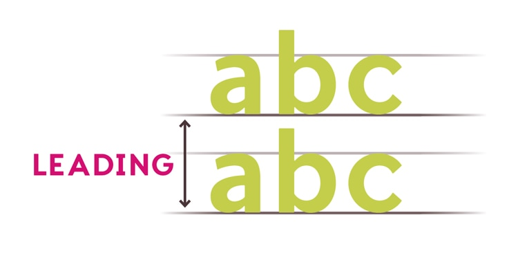Kerning, eller “knibning” dette er afstanden mellem hvert bogstav, det kan justeres og skabe balance.
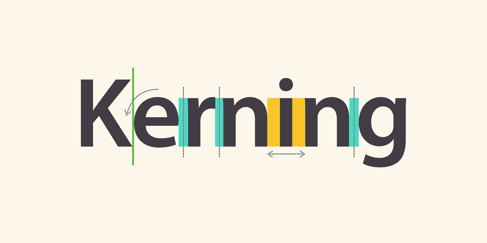Og så er der tracking, det er med til at justere den overordnede afstand, som der er mellem alle bogstaver i et enkelt ord.
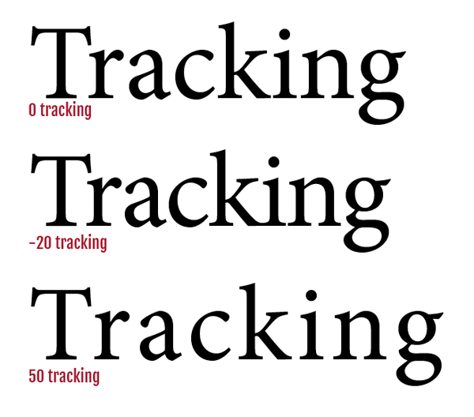Der findes mange forskellige måder man kan klassificere en skrift på. Den mest udbredte måde at gøre det, er ved brug af Serif, eller Sans Serif. Serif, eller antikva, her får bogstaverne fødder. Serif bliver typisk benyttet til brødtekst, ad det er med til at gøre længere tekststykker mere læsbare. Seriffer, eller fødderne er med til at skabe en form for læselinje for brugerens øjne. Sans serif eller grotesk, dette er når ens tekst ikke har fødder på, dette bliver oftest benyttet til overskrifter da det giver en god kontrast til serif, da det giver en stram moderne stil til overskriften. Denne form har været foretrukken i lang tid, til brødtekst på de moderne internetsider.
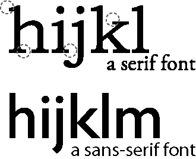Fotografering
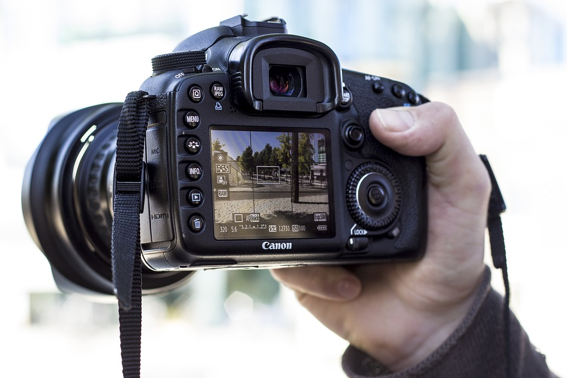Fotografering er en god grund ting at have styr på, da det er med til at frem promovere en, da et godt billede kan skabe et bedre salg f.eks. hvis man er ved at lave en annonce eller man skal lave en reklame.
Hvordan virker et kamera
Der er forskellige kameratyper, både forskellige mærker, men også forskellige modeller indenfor disse mærker. Vi har i undervisningen arbejdet med Canon 90d.
Lukketid
Her kan man bestemme hvor lang tid der skal gå, før ens kamera skal tage et billede, om det kan være med det samme man trykker på knappen, eller om der skal gå en vis tid. Der kan være forskellige lukketider, i forhold til hvad man skal tage billeder af. Hvis man f.eks. skal tage billeder af sportsfolk, kan det være en fordel at man har en kort lukketid, men hvis man så til gengæld skal tage et billede hvor man skal være sikker på alt er som det skal være, hvis det nu er et opstillet billede, så kan en lang lukketid være en fordel.
Jo længere lukketid man har på et kamera, jo bedre lys for man også på et billede, men også jo længere lukketid, jo mere bevægelsessløring er der på billede og der er flere rystelser også.
Objekter
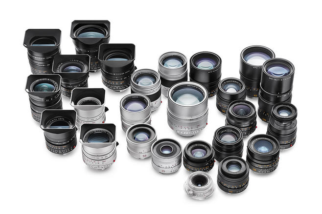Der er mange forskellige objektiv til et kamera. Der findes objekter der kan zoome meget ud og dermed, kan man tage skarpe billeder af noget, der er på lang afstand, men man kan også tage billeder af ting der er tæt på. Der er også objektiver, som har en fast længde, hvor man ikke kan zoome, men som er beregnet til en fast afstand.
Brændvidde
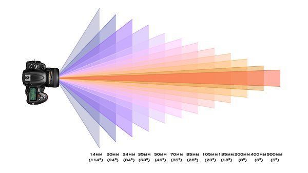Brændvidden på et kamera er, den afstand, der er fra det midterste på kameralinsen til sensoren, der sidder i kameraet. Dette måles i millimeter. Den sensor der sidder i kameraet, opfanger lys, og derved vinkels dette lys forskelligt, alt efter hvilken brændvidde man har, så når man har en meget kort afstand er der, en vidvinkel og en bred vinkel, men når man har en lang afstand, bliver brændvidden mere som et tele.
ISO
ISO, det er kameraets følsomhed overfor lys. Den standard ISO man har, er på en værdi af 100, men man kan skrue ISO’en på til 6400. Dog kan der forekommer meget “støj” på ens billede hvis man skruer ens ISO for meget op. ISO er kameraets sensorer.
Illustrator
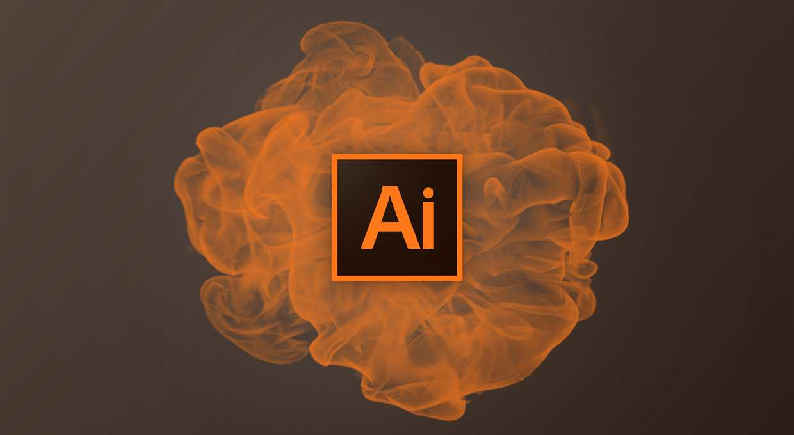Hovedformålet med illustrator er at skabe vektorgrafik. Illustrator bruger vektorbaserede teknologi, det vil sige at man kan forstørre, eller mindske tingene, uden at det gør billede uskarpt. Illustrator er derfor et godt program at lave logoer i, da det netop kan forstørre og formindske tingene, så man kan lave mange små detaljer uden det bliver forringet.
Når man arbejder i illustrator, så arbejder man på artboards, dette fungere som et slags papir, man kan vælge hvilken størrelse ens artboards skal være, og om det skal være stående eller liggende. Når man designer sine ting i illustrator, så arbejder man i forskellige lag, dette er både en tilgangsmåde man arbejder på, men også et værktøj. I og med man kan arbejde i lag, er det muligt at man kan lave nogle forskellige effekter, denne arbejdsmåde kaldes non-destruktivt, og det er med til at man bevare ens originale artboard.
Photoshop

Photoshop er et pixels baseret program, netop derfor, er det ikke lige så godt som illustrator, til at lave f.eks. logoer i. Pixels kan ikke skaleres på den samme måde, som når man arbejder i et vektorgrafik program. Oprindeligt blev photoshop skabt til at man udelukkende kun skulle kunne redigere billeder i det og derfor er det også et eminent program til dette formål.
Gestantlovene
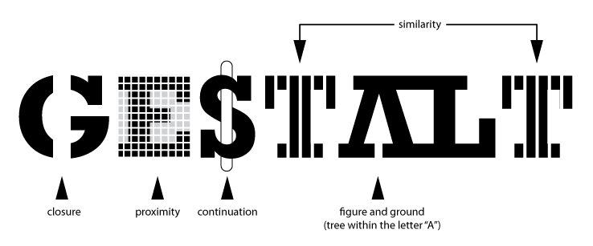"The whole is different than the sum of its parts" - Max Wertheimer
Gestaltloven handler kort og godt om perception, og beskriver hvordan vi som mennesker sanser og forsøger at få vores hjerner til at finde en sammenhæng i verden. Der er 5 regler i gestaltloven
Loven om nærhed (proximity)
Det er når objekter står tæt sammen, og opfattes som relaterede til hinanden. Vi som mennesker prøver at skaffe os et overblik, ved at afgøre hvilke ting der hører sammen, dette er en automatisk proces vi som mennesker foretager os.
Som menneske og brugere, skal vi kunne fornemme, hvilke informationer der hænger sammen. Dette gælder både billede tekst og billede, overskrifter og tekst og menupunkter i en menu
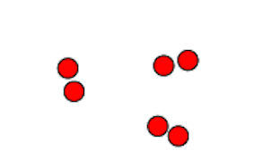Loven om lighed (similarity)
Dette er elementer som er ens i enten form, størrelse, farve eller retning, dette opfattes som en form for gruppe. Med farver giver det en stærk måde at skabe lighed på. Et godt eksempel er navigationen på vores hjemmesider, da de næsten altid placeres samme sted, dette giver vores brugere et overblik og gør at de ikke er i tvivl om hvor de skal kigge hen, for at finde navigationen.
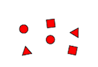Loven om lukkethed (closure)
Symboler som står sammen i en ramme, de bliver opfattet som ting der hører sammen, også selvom det ikke er de samme former eller farver, opfattes de som en sammenhæng, da de er indrammet, og dermed er i en lukkethed. F.eks. bruger aviser, ugeblad og magasiner lukkethed.
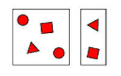Loven om forbundethed
Forbundethed, det opfatter vi når figurerne er forbundet med streger eller farver, selvom de evt. har forskellige farver, da stregerne binder dem sammen. Det kan også være hjælpelinjer, som leder øjet i brede tabeller. Man ser oftest forbundet farver i forhold til menuen, det er især udbredt ved faneblads-navigation. Her har det nemlig den samme farve som indholdet på siden.
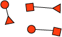Loven om figur og baggrund (figure-ground)
“Den mindste, afgrænsede figur på arealet vil først blive opfattet som figuren”. Her kan vi som mennesker komme i tvivl om, hvad er forgrund og hvad er baggrund. Rubins vase er en af de klassiske figurer. Da han lavede denne, pirrede han bevidst vores sanser, da han gjorde det svært for os at se forskel på baggrund og forgrund. En af de ting man som designer skal være opmærksom på er at hvis man laver tekst på denne måde, kan det gøre det svært for brugerne at læse og dermed får man brugerne til at bruge for meget tid på at tyde teksten.
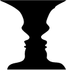